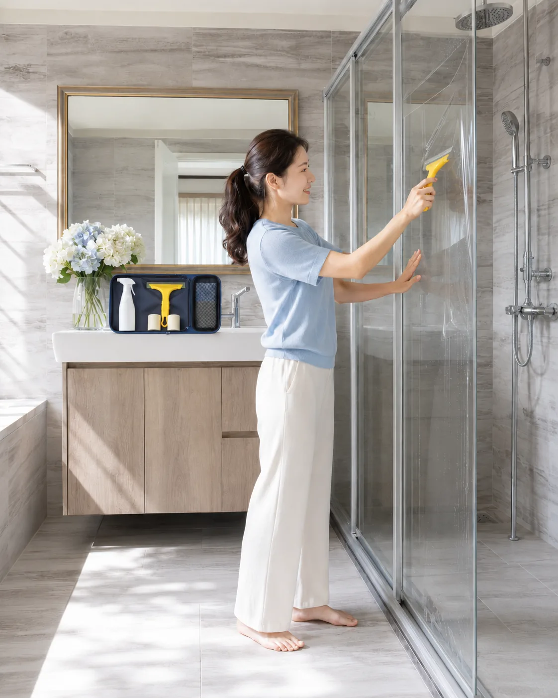

晴安心不是只寄一張膜給你。我們把選尺寸、清潔、定位、刮水、修邊要用的工具與教學裝進一包。濕貼可調整，30 分鐘慢慢完成，不用專業經驗，也不用多找一個人幫忙。

顧客不需要變成師傅。只要照著工具包與步驟，一個人就能把大張膜慢慢定位、刮平、修好。
先看浴室有幾片玻璃，再選寬度。商品組合已依常見兩片、三片浴室整理好。
從定位、刮水到修邊，該用的工具都放在同一包裡，收到就能開始。
不是一次黏死。還沒完全乾之前，可以重新對位，貼歪也有補救空間。
尺寸不確定、貼到一半有問題，都能拍照詢問客服，不需要自己猜。
工具包的價值不是看起來很多，而是每一樣都在幫你少犯一次錯。
頁面用完整、不中斷的實拍證明「真的只有一個人」，而不是只用一句話宣稱很簡單。
不是用低價膜硬拼價格，而是用完整工具包，把原本花在到府、丈量與施工的人力費省下來。
有了工具包，真的超簡單，30分鐘就能一個人獨自貼完
濕貼保留調整時間，先固定上方，再慢慢往下刮水，不用兩個人拉住四角。
「本來以為一定要兩個人，實際照影片做，一個人慢慢刮就完成了。」
「貼歪時還能重新調位置，這點對第一次 DIY 的人很重要。」
「不用約時間等師傅，週末自己貼完，還省下好幾千元。」
兩年內若出現脫落、破裂、不黏等情形，客服確認後協助更換。尺寸不確定、貼到一半卡住，也可以拍照詢問，不必一個人硬猜。
標準浴室尺寸、玻璃高度 210 公分以下，可依教學由一人完成。若玻璃超高、超寬或五金結構特殊，建議先拍照詢問客服。
可以。工具包與教學就是為第一次 DIY 的人設計：重點不是手快，而是清潔完整、噴水足夠、慢慢刮。
濕貼在未乾前可以重新噴水、微調位置，不是碰到玻璃就完全不能動。
用工具從中間往外慢慢推。如果氣泡內有灰塵，先停止操作並拍照詢問客服。
你省下的是丈量、預約、交通與到府施工人力：膜材、工具、教學與售後仍包含在套組內。
不能。防爆膜的作用是在玻璃破裂時協助黏住碎片，降低飛散風險，不是保證玻璃永遠不破。